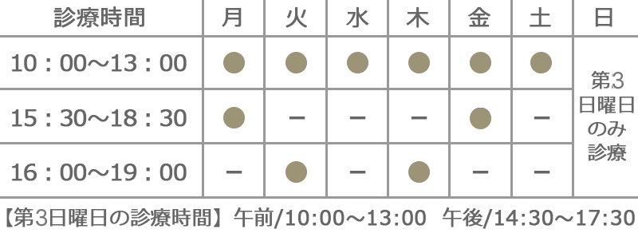

症状について
- 和皮ふ科クリニックホーム
- 診療のご案内
- 保険診療のご案内
- 症状について【乳児湿疹】
乳児湿疹
乳児湿疹とは、乳児期の赤ちゃんの体や顔などに起こる湿疹の総称です。生後2～3週間から2ヵ月頃の赤ちゃんに多く見られる症状です。
かゆみに耐え切れず、掻いてしまい、皮膚がむけてジュクジュクになることもあります。
生後3ヶ月頃までの乳児湿疹の原因
生後3ヶ月頃までは皮脂の分泌量が多いことが原因とされます。お母さんの胎内にいた時に胎盤を通して赤ちゃんに渡されたお母さんの女性ホルモンが影響して皮脂の分泌が盛んになります。
そのため、赤ちゃんは毛穴が詰まりやすく、皮脂腺に脂がたまり湿疹ができやすくなります。
生後3ヶ月以降の乳児湿疹の原因
生後3ヶ月を過ぎると、赤ちゃんの皮脂の分泌量は減っていきます。それにより、今度は皮膚が乾燥してカサカサしがちになります。
汚れやウイルスから肌を守る「バリア機能」が乾燥により弱くなり、外部からの少しの刺激だけで炎症を起こして湿疹ができやすくなります。
乳児湿疹の治療
しっかりと保湿を行うことが大事です。かゆみが強い場合には炎症を抑えるステロイドを使用します。皮膚を常に清潔に保つようにしてください。
また、赤ちゃんは汗をかきやすく、それが原因で湿疹を引き起こすことがあります。室温や服装などでうまく体温調節をして、汗の過剰分泌を防ぐようにしてください。


- 和（やわら）皮ふ科クリニック
- 皮膚科・アレルギー科・美容皮膚科
- 所在地
- 大阪府大阪市北区天神橋5丁目7-10さかしん天神橋ビル4F
- 休診日
- 日曜・祝日 ※第3日曜日は診療します
（翌木曜日は代休とさせていただきます）

※初診の受付は終了15分前までです。